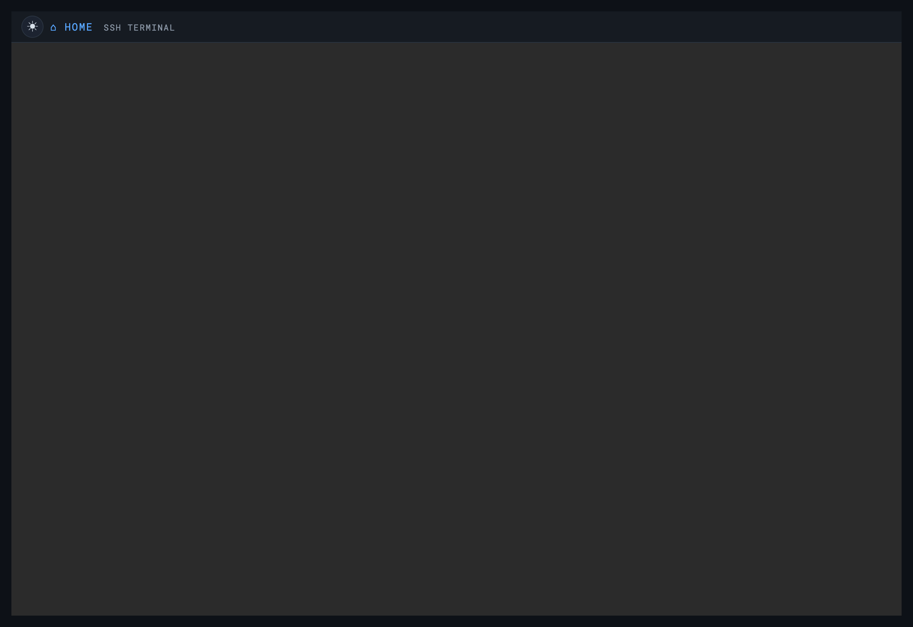

Web SSH Terminal
A full login shell on the Pi, in any browser — no SSH client needed

ttyd serves a browser-based terminal on port 7681. Any browser on the local network can open a login shell on the Pi — handy for headless administration with nothing installed. It’s surfaced as the Web SSH card in the dashboard.
python3 services/webssh/install.py # bundled binary if present, else download
python3 services/webssh/install.py --port 8090 # use a different port
python3 services/webssh/install.py --bind 127.0.0.1 # localhost only
python3 services/webssh/install.py --basic-auth # add an extra HTTP user:pass gate
python3 services/webssh/install.py --verify # check an existing installLogging in
Open the Web SSH card; the page asks for your normal Pi username and
password (the ones you set in Imager) and gives you a full terminal.
sshd must be running on the Pi — the installer checks and warns if not.
Install source
ttyd isn’t in the Debian/Pi OS stable repos, so this installs the
upstream prebuilt static binary to /usr/local/bin/ttyd — a single
self-contained file. If the matching binary is bundled at
offline-packages/webssh/ttyd.<arch> it’s used offline; otherwise it’s
downloaded. Install is version-aware and never downgrades.
ttyd serves plain HTTP. Keep it on your trusted LAN or hotspot; don’t expose it to the internet without a TLS reverse proxy, and never pass it over an encryption-prohibited RF link.
Troubleshooting
| Symptom | Cause & fix |
|---|---|
| The terminal is blank | ttyd isn’t running. Start it from the dashboard card, or sudo systemctl restart webssh (the ttyd unit). |
| Keys do nothing | Click inside the terminal to give it focus. |
| It asks for a login | Web SSH is a real shell — use your Pi account. Anyone on the LAN who reaches it gets a shell, so keep OASIS on a trusted network (see Security). |